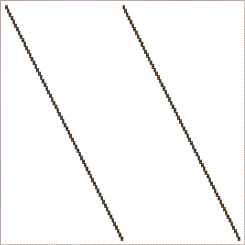
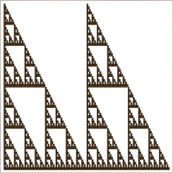
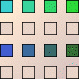
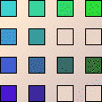

IFS with Memory
Combinations of Lines




What happened here? The picture on the right is not contained in our original picture. Think a bit, then click
here
for an answer.
Return to
combinations of lines, 5
.